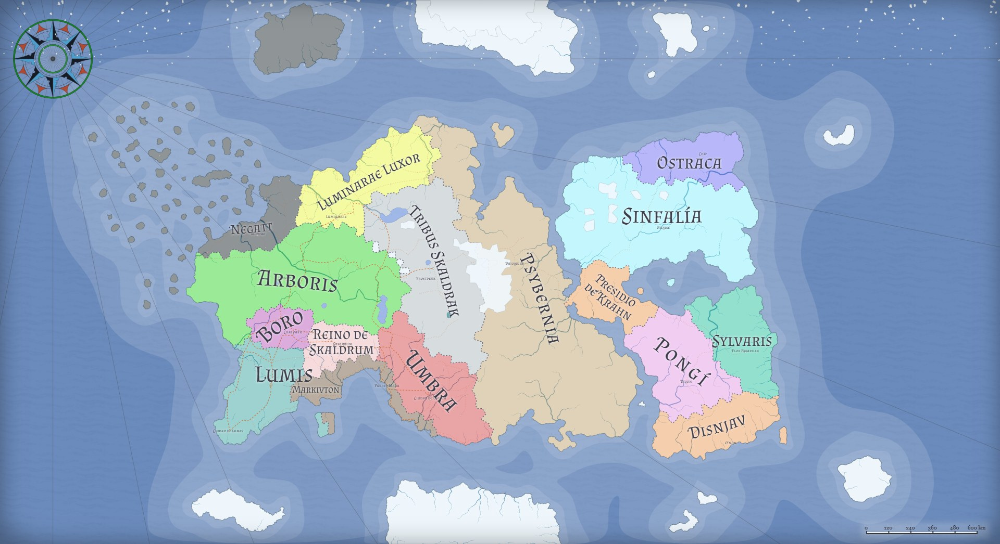

Antes de Apexora
Unen y el Cataclismo
Antes de llamarse Apexora, este continente era Unen, una civilización hermanada en el progreso. Un gran asteroide la fragmentó en lo que hoy se recuerda como el Cataclismo de Unen — el mismo suceso que, leído a través de la fe, se cuenta como la disputa entre Ape y Xora (ver Mitología).
La destrucción de las vías de comunicación dejó un mundo fragmentado: durante generaciones, quienes vivían de un lado del continente no supieron qué había sido de quienes vivían del otro, al punto de que algunos llegaron a dudar de que hubiera alguien más allá de las Montañas Skaldrak.
—Tuve hermanos que cruzaron las montañas para huir del ejército de Umbra. Sabemos que nada bueno les espera allí. Me he resignado. — Solaris, el Primero de Luminarae Luxor
Oeste
- Luminarae LuxorReino de Fe y Elevación
- ArborisEl bosque — hogar de las tribus, incluída Zudodh Ez
- NegattLa Sombra Sabia
- Reino de SkaldrumFeudalismo grecorromano
- Tribus SkaldrakPor explorar
- LumisCiudad de Sol y Cables
- BoroEl Refugio de los Restos
- UmbraEl Imperio del Martillo
- MarkivtonNación de piratas y anarquía
Este
- SinfalíaLa nación de la alegría obligada — la localidad de Vasané-Nalú tomada por la Tribu Zzamua
- La Urdimbre de SylvarisNecrocracia de mente colmena — de aquí partió la Tribu Zzamua
- El Presidio de KrahnGerontocracia de silenciadores
- La OstracaKakistocracia de clones cíclicos
- PsyberniaPor explorar — vecino oriental de Umbra, de donde llegó la Gran Inmigración
- PongíPor explorar
- DisnjavPor explorar